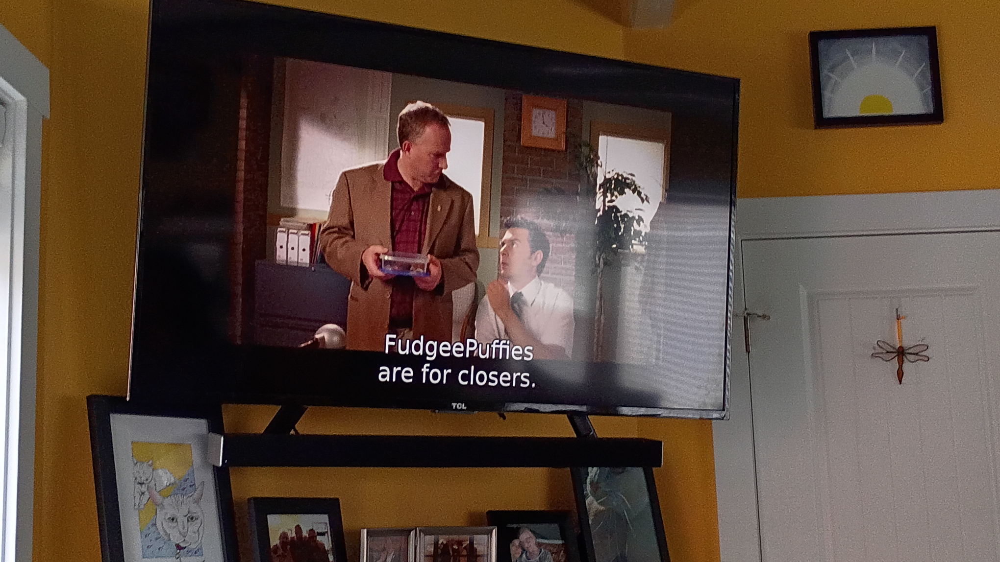
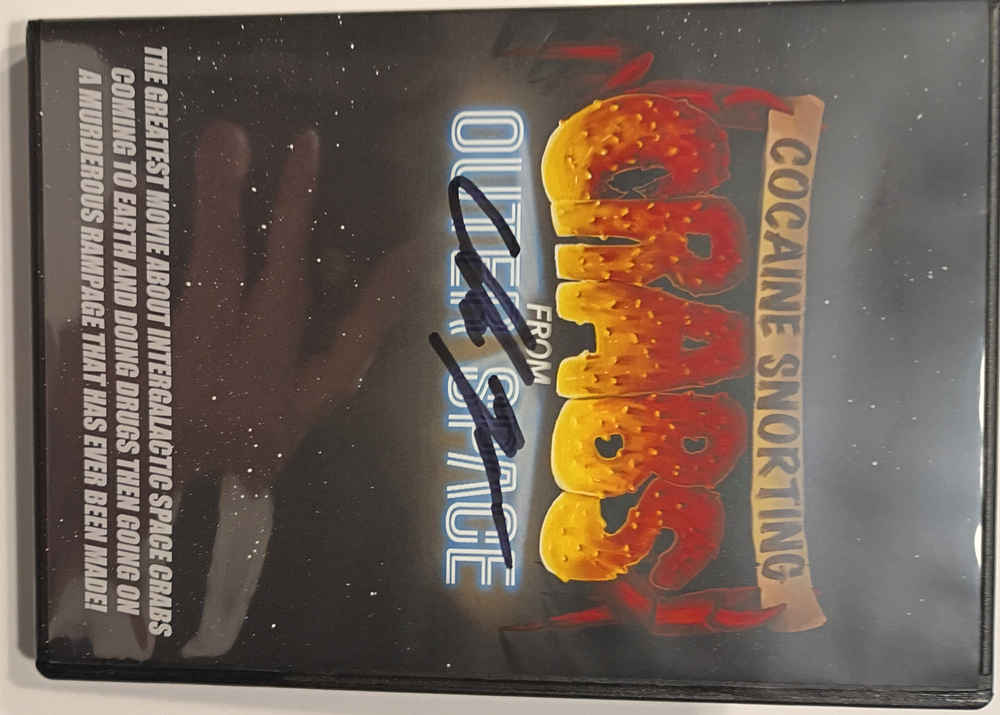

In a First, an Astronomer May Have Witnessed a Comet Stop Its Spin—Then Reverse Its Rotation
This probably happened because the sun heated some of the comet’s ice, turning it into gaseous jets that acted like thrusters on a rocket, Jewitt tells Nikk Ogasa at Science News. Most of those powerful jets are likely located on one side of the space rock, forcing it to spin in a certain direction.
❄
We allow ourselves to be governed by laws made by people who, for the most part, do not believe those laws apply to them.
And it turns out they're mostly right.
I used to have high hopes for humanity. In grade school we had to draw a picture of what schools would look like in the future. I chose a spaceship with the name of our school on the side of it flying through space. There were little portal windows (kind of a school bus/school). You could see the teacher and the students having class amongst the stars.
Future! Space! Humanity!
I knew things weren't perfect, of course, but the older I got, the more I learned about history, and with the way things are now? So many people living in poverty. So any people believing others are there only to be used and taken advantage of. So many people who believe that other people are less than human . . . a human resource only to be used up for their enrichment. Humanity is doomed, and rightfully so. Thank goodness our kind won't be around to contaminate the stars.
The universe doesn't need that kind of action.
While I've given up on humanity, I haven't given up on individuals. I try to take care of people around me to the extent that I don't hurt myself (too much) doing it. Diversity, Equity, and inclusion are wonderful ideals to strive for, as are empathy and love. There are, unfortunately, far too many people who don't believe in these things for others.
And if everything up above seems a bit milquetoast? A tad underwhelming. A bit "washing my hands of the entire thing?" Maybe. You might be right.
❄
Saw my first new postal service vehicle in the wild this past week. The Oshkosh Next Generation Delivery Vehicle. Designed in Oshkosh, WI.
❄
I don't just want to be rich, I want to be "I don't have to turn the bottle of lotion upside down to get the last of it" rich.
❄

❄
Reentry video as Orion returns from Artemis I
Dec. 11, 2022, NASA’s Orion spacecraft reenters the atmosphere after completing a 1.4 million-mile, 25.5 day Artemis I mission to the Moon.
❄
It wasn't reading Flowers in the Attic or all those Stephen King books at too young an age that messed me up for decades, it was that damned The Giving Tree. *shakes fist* Damn you, Shel Silverstein!
❄
I like the phrase, "we are the universe experiencing itself," though it seems to attribute an intellect or driving force that isn't there . . or probably isn't there? What the heck do I actually know about the mysteries of the universe anyway, huh?
Regardless of intent, it's a good reminder that we are, all of us, the universe . . . not just in the universe . . . but the universe itself (kind of like when you're on the road and stuck in traffic? You're not stuck in traffic, you are traffic.) And who knows? If the universe is self-organizing maybe there's a method behind the chaos . . . and . . . all of this is to say that if I am (and, indeed we all are) the universe experiencing itself, I'm guessing I was designed the way I am for a reason, and can it really be my fault, then, that the universe designed me to be lazy? Who am I to deny the universe it's desire to experience a complete lack of industriousness and productivity? Dynamism and vigor? Ambition and, well, frankly I can't be arsed to come up with another synonym . . . you get the picture . . . and if you don't? Well, I'm going to go take a nap, you'll figure it out.
❄
Cocaine Crabs from Outer Space.
Living about two hundred feet from the Pacific Ocean in one of the bigger towns on the Oregon Coast (population 10,000ish dontchaknow) means we get lots of tourists. Lots. We're always meeting new people. This time around? We met the writer and director of Cocaine Crabs from Outer Space. Chuck Magee happened to be here on vacation (in the house next door), Stacy and I were working on the yard, he stopped to ask a question about beach accesses, we got to talking and ended up getting a signed special edition copy of the movie.

Special edition because the title on this one was Cocaine Snorting Crabs from Outer Space. He said the movie was pretty big in Japan, but to get past the censors there he had to drop the word "snorting."
Anyway, he signed the DVD case for us and now we're going to kick up our feet and watch Cocaine I know, right? caveat lectorSnorting Crabs from Outer Space.